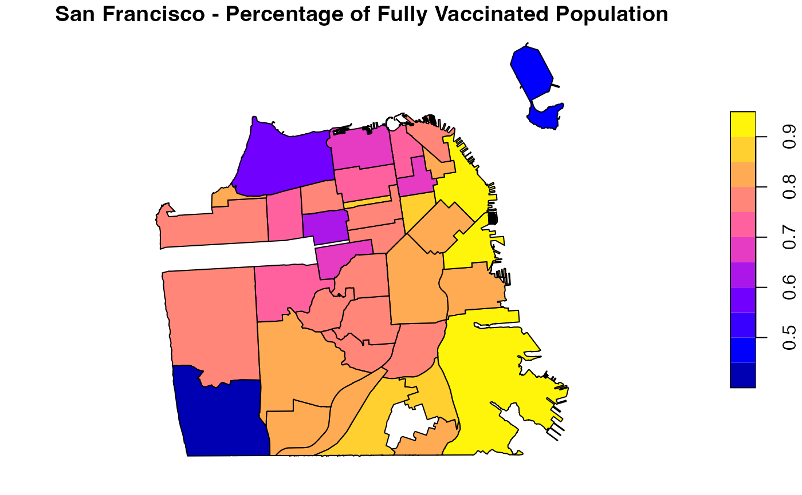
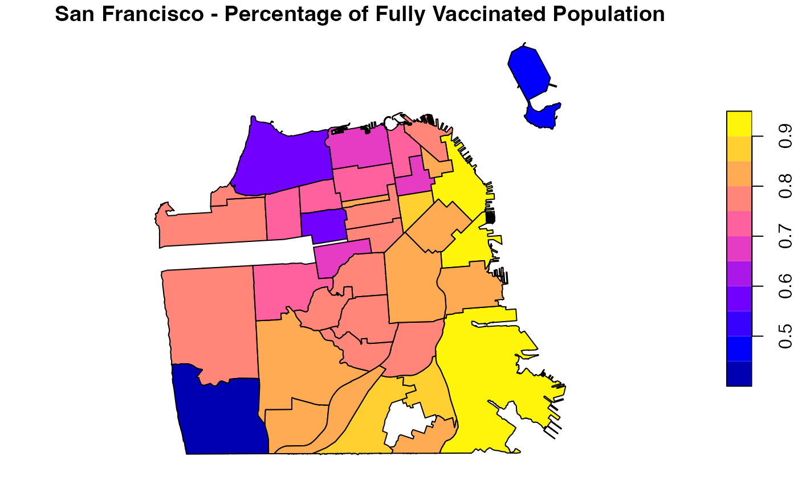

R/data.R
covid19sf_vaccine_geo.RdThis dataset represents the COVID-19 vaccinations given to SF residents summarized by the geographic region of their residential address. All vaccines given to SF residents are included, no matter where the vaccination took place (the vaccine may have been administered in San Francisco or outside of San Francisco). Data provides counts for people who have received at least one dose and people who have completed a vaccine series. A vaccine series is complete after an individual has received both doses of a two-dose vaccine or one dose of a one-dose vaccine. More information about the data available here
covid19sf_vaccine_geoAn object class sf and data.frame with 8 variables.
area id
Area type, c("Analysis Neighborhood", "Summary")
Count of residents in the given geographic region who have received at least one dose administered by DPH
Count of residents in the given geographic region who have received at least one dose regardless of who administered the vaccine
Count of residents in the given geographic region who have completed a vaccine series
2019 5-year American Community Survey population estimate for the given geographic region (all ages)
The total count of population that have complated a vaccine series by population estimate (acs_population)
Last update of the data in POSIXc format)
The area polygon data)
San Francisco, Department of Public Health - Population Health Division through San Francisco Opne Data protal website.
The dataset contains a summary of covid19 vaccination in San Francisco by neighborhood
data(covid19sf_vaccine_geo)
head(covid19sf_vaccine_geo)
#> Simple feature collection with 6 features and 8 fields
#> Geometry type: MULTIPOLYGON
#> Dimension: XY
#> Bounding box: xmin: -122.4773 ymin: 37.73155 xmax: -122.3843 ymax: 37.80602
#> Geodetic CRS: WGS 84
#> id area_type count_vaccinated_by_dph
#> 1 Bernal Heights Analysis Neighborhood 5106
#> 2 Financial District/South Beach Analysis Neighborhood 1841
#> 3 Glen Park Analysis Neighborhood 573
#> 4 Haight Ashbury Analysis Neighborhood 823
#> 5 Hayes Valley Analysis Neighborhood 2401
#> 6 Inner Sunset Analysis Neighborhood 1220
#> count_vaccinated count_series_completed acs_population
#> 1 21109 19781 25167
#> 2 22782 20215 21537
#> 3 7257 6804 8651
#> 4 14360 13279 19275
#> 5 16351 14930 19711
#> 6 23414 21829 29539
#> percent_pop_series_completed last_updated
#> 1 0.7859896 2021-12-15 04:45:07
#> 2 0.9386173 2021-12-15 04:45:09
#> 3 0.7864987 2021-12-15 04:45:09
#> 4 0.6889235 2021-12-15 04:45:09
#> 5 0.7574451 2021-12-15 04:45:09
#> 6 0.7389891 2021-12-15 04:45:09
#> geometry
#> 1 MULTIPOLYGON (((-122.4036 3...
#> 2 MULTIPOLYGON (((-122.3875 3...
#> 3 MULTIPOLYGON (((-122.4474 3...
#> 4 MULTIPOLYGON (((-122.432 37...
#> 5 MULTIPOLYGON (((-122.4208 3...
#> 6 MULTIPOLYGON (((-122.4529 3...
library(sf)
library(dplyr)
#>
#> Attaching package: ‘dplyr’
#> The following objects are masked from ‘package:stats’:
#>
#> filter, lag
#> The following objects are masked from ‘package:base’:
#>
#> intersect, setdiff, setequal, union
df <- covid19sf_vaccine_geo %>% filter(area_type == "Analysis Neighborhood")
# Ploting SF vaccine counts using base plot function
plot(df[, c("count_series_completed", "geometry")],
main = "San Francisco - Fully Vaccinated Population")

plot(df[, c("percent_pop_series_completed", "geometry")],
main = "San Francisco - Percentage of Fully Vaccinated Population")
